{kind=link}
{kind=link}
{kind=link}
{kind=link}
{kind=link}
{kind=link}
{kind=link}
{kind=link}
{kind=link}
{kind=link}
 12..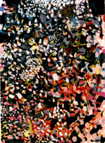
13..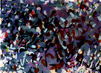
12..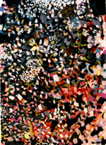
13..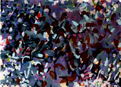
{kind=link}
{kind=link}
11.. "Search, Discover" 1996, 30 x 22" acrylic on paper
12.. "Wawaiian bush" 1996, 30 x 22" acrylic on paper
13.. "The Swimmer" 1996, 22 x 30" acrylic on paper
by Samia A. Halaby
1..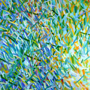
2..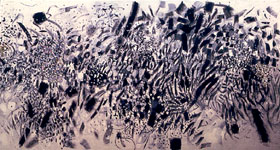
1.. "Green Hay" 1999, 18 x 18" oil on canvas
2.. "Olive Orchard in My Studio" 2000, 72" x 175" acrylic on canvas
3..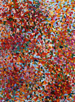
4..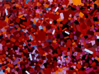
5..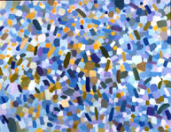
3.. "Spring symmetry", 1999, 48 x 36" acrylic on canvas
4.. "The Red One" 1999, 36 x 48" oil on canvas
5.. "Evening Sky in Amman" 1999, 36 x 46" oil on canvas
6..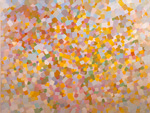
7..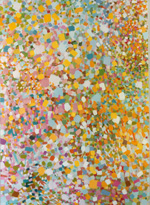
6.. "Quiet Fire in Blue Sky" 1999, 36 x 48" oil on canvas
7.. "Lemon Blossoms of Palestine" 1996, 48 x 66" oil on canvas
8..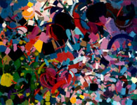
9..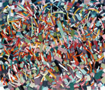
10..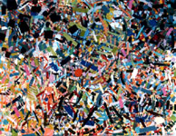
8.. "Variable Motion" 1993, 36 x 46" oil on canvas
9.. "Swirling" 1990, 34 x 40" oil on canvas
10.. "Incidence" 1992, 36 x 46" oil on canvas
11..
12..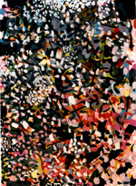
13..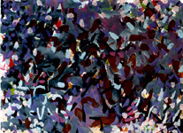
11.. "Search, Discover" 1996, 30 x 22" acrylic on paper
12.. "Wawaiian bush" 1996, 30 x 22" acrylic on paper
13.. "The Swimmer" 1996, 22 x 30" acrylic on paper
14..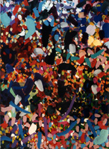
15..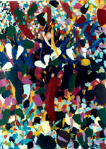
16..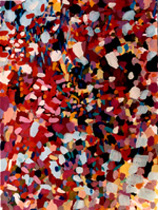
14.. "Chinatown on Canal" 1996, 30 x 22" acrylic on paper
15.. "Between Branches" 1996, 30 x 22" acrylic on paper
16.. "Heat" 1996, 30 x 22" acrylic on paper
![[Art on the Net]](/images/artnet_button.gif)
{kind=link}
{kind=link}
{kind=link}